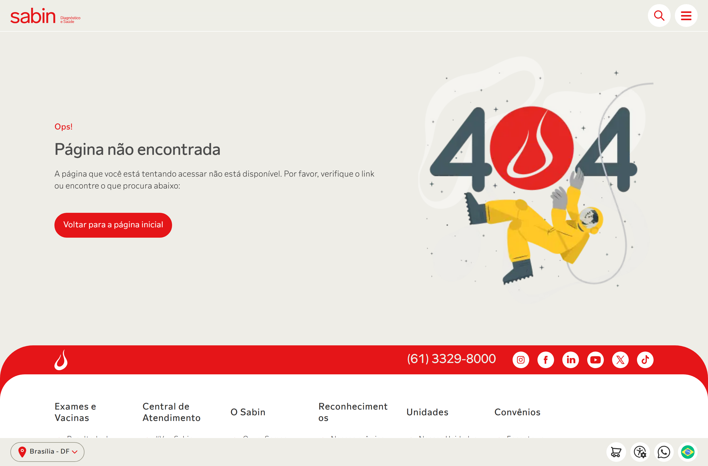
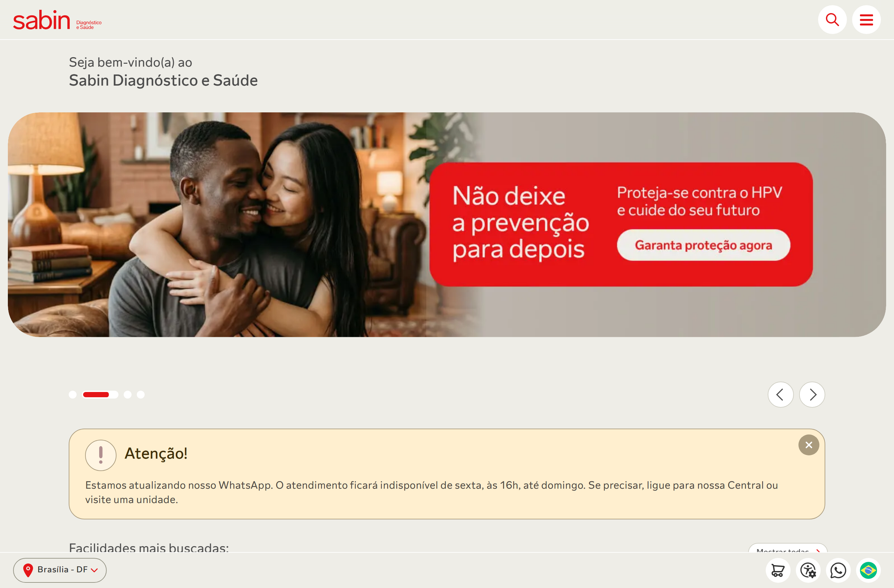
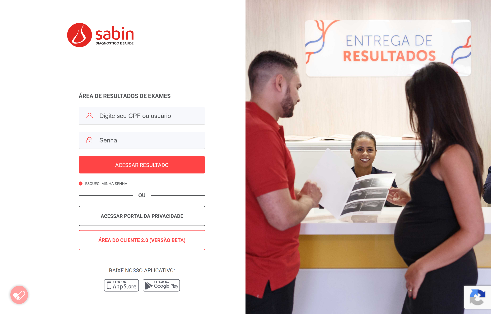
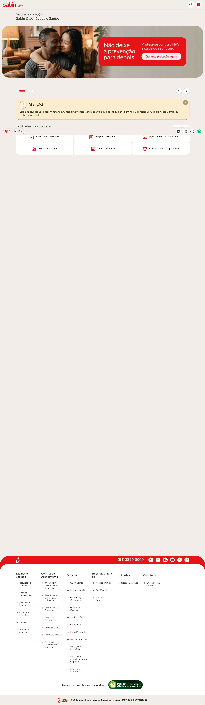

Este relatório apresenta o diagnóstico de Interação Humano-Computador (IHC) do portal Sabin Diagnóstico e Saúde (sabin.com.br), conduzido pelo Grupo 07 da disciplina de IHC 2026.1 da Universidade de Brasília. Esta avaliação reúne duas frentes de inspeção especialista — avaliação heurística e checklist de acessibilidade (WCAG 2.2 / NBR 17225:2025) — aplicando o referencial do Guia de Acessibilidade Pocket V2, desenvolvido pelo próprio grupo.
Conclusão central: o portal apresenta esforços visíveis de acessibilidade
(declaração de idioma, aria-label em botões, VLibras), mas falha nas tarefas mais importantes do usuário —
agendar exames, encontrar informações e acessar resultados. Foram identificadas três falhas catastróficas
(rota de agendamento quebrada, homepage sem título principal e página de erro sem saída) e um nível de conformidade
de acessibilidade de apenas 37,5%, muito abaixo do exigido pela NBR 17225:2025 (que demanda 100% dos
critérios WCAG 2.2 níveis A e AA).
| Achado | Severidade | Impacto no negócio |
|---|---|---|
Rota /agendamento/ retorna erro 404 | Catastrófico | O principal CTA de conversão ("Agendamentos #VemSabin") leva a uma página de erro — perda direta de agendamentos. |
Homepage sem <h1> | Catastrófico | Leitores de tela não identificam o título da página — barreira de acessibilidade e perda de SEO. |
| Conformidade WCAG em 37,5% | Não Conforme | Patamar muito abaixo da exigência legal (NBR 17225:2025) — risco de inacessibilidade e de não conformidade normativa. |
O Sabin é uma das maiores redes de medicina diagnóstica do Brasil, e seu portal é a principal porta de entrada digital para pacientes que precisam buscar exames, agendar atendimento e acessar resultados. A qualidade de uso desse portal afeta diretamente a experiência do paciente, a eficiência operacional e a inclusão de pessoas com deficiência — esta última, exigência legal sob a NBR 17225:2025 e a Lei Brasileira de Inclusão (Lei 13.146/2015).
O objetivo desta avaliação é diagnosticar, sob múltiplas lentes metodológicas, a qualidade de uso do portal frente às tarefas centrais do usuário, produzindo recomendações priorizadas por severidade e impacto. O documento é estruturado como entregável técnico, no formato em que seria submetido a um órgão ou empresa responsável pelo produto.
Foram analisadas as seguintes áreas e rotas do portal, cobrindo as jornadas mais frequentes do usuário:
sabin.com.br) — ponto de entrada e principais CTAs;/agendamento/);laudos.sabin.com.br) — tela de login;Limites: as áreas autenticadas (interior do portal de laudos e o fluxo completo de pagamento) não foram percorridas por exigirem credenciais reais de paciente. Os achados desses pontos restringem-se à camada pública (tela de login, estrutura e semântica).
Este relatório consolida duas frentes de inspeção especialista que se reforçam mutuamente. Ambas adotam o vocabulário e os critérios do Guia de Acessibilidade Pocket V2, construído pelo grupo e organizado por função profissional (desenvolvedor, designer, redator, gestor).
| Frente | Descrição | Referencial |
|---|---|---|
| Avaliação Heurística | Inspeção do site com base nas 10 heurísticas de usabilidade, classificando cada problema em escala de severidade de 0 a 4. | Nielsen (1994, rev. 2020); Pocket V2 — Heurísticas |
| Avaliação de Acessibilidade | Checklist de 18 itens de conformidade aplicados ao HTML renderizado, classificados como Conforme / Parcial / Não Conforme / Não Verificável. | WCAG 2.2; NBR 17225:2025; e-MAG 3.1; Checklist Pocket V2 |
Reverificação técnica (26/06/2026): os achados dependentes de código foram reconfirmados ao vivo com inspeção automatizada do DOM renderizado (navegador Chromium, locale pt-BR), e as evidências visuais deste relatório foram capturadas na mesma data.
Foram catalogados 21 problemas (HE-01 a HE-21) distribuídos pelas 10 heurísticas. A distribuição por severidade evidencia a concentração de risco no fluxo central de agendamento:
| Severidade | Qtde. | Identificadores |
|---|---|---|
| 4 — Catastrófico | 3 | HE-05, HE-11, HE-18 |
| 3 — Major | 4 | HE-01, HE-03, HE-10, HE-13 |
| 2 — Minor | 9 | HE-02, HE-06, HE-07, HE-09, HE-12, HE-14, HE-16, HE-19, HE-20 |
| 1 — Cosmético | 5 | HE-04, HE-08, HE-15, HE-17, HE-21 |
HE-05 / HE-18 — Fluxo de agendamento quebrado (Catastrófico). A URL /agendamento/, promovida na
homepage como CTA principal, retorna erro 404. A página de erro não oferece nenhuma rota alternativa para a função de
agendamento, deixando o usuário sem saída — falha que combina violação de Controle e Liberdade (H3) e
Recuperação de Erros (H9).

sabin.com.br/agendamento/ retorna "Página não encontrada", sem rota alternativa de agendamento.HE-11 — Homepage sem título principal (Catastrófico). A inspeção ao vivo confirmou
zero elementos <h1>: a hierarquia começa em <h2>. Usuários de leitor de tela que
navegam por cabeçalhos perdem o ponto de entrada semântico da página.

<h2> — não há <h1>. Observe também o carrossel com avanço automático e a densidade visual (HE-16).HE-03 / HE-10 / HE-20 — Portal de resultados sem orientação (Major). A tela de login do portal de laudos
solicita a credencial de forma ambígua ("Digite seu CPF ou usuário"), sem máscara de formato, sem <label>
associado e sem ajuda contextual — justamente no ponto de maior dúvida do usuário.

laudos.sabin.com.br): credencial ambígua e ausência de ajuda contextual no login.lang="pt-BR") e landmark <main> único e presente;aria-expanded e botões de ação com aria-label descritivos;Aplicando o checklist de 18 itens (WCAG 2.2 / NBR 17225:2025), o portal atingiu 37,5% de conformidade — patamar muito aquém do exigido. A NBR 17225:2025 demanda conformidade plena (100%) nos critérios de níveis A e AA.
| Seção | Itens | Conformes | Parciais | Não Conformes | % Conformidade |
|---|---|---|---|---|---|
| A — Percepção Visual e Auditiva | 5 | 1 | 2 | 2 | 40% |
| B — Operabilidade e Navegação | 5 | 1 | 1 | 2 | 37,5% |
| C — Compreensibilidade e Ajuda | 6 | 1 | 1 | 3 | 30% |
| D — Robustez e Código Semântico | 2 | 0 | 2 | 0 | 50% |
| Total | 18 | 3 | 6 | 7 | 37,5% |
| Critério | WCAG | Constatação | Status |
|---|---|---|---|
| Texto alternativo em imagens | 1.1.1 (A) | 92 de 112 imagens com alt="", incluindo selos de certificação e fotos de unidades (informativas). | Não Conforme |
| Contraste mínimo | 1.4.3 (AA) | Texto #999 sobre branco (~2,85:1) abaixo do mínimo de 4,5:1. | Não Conforme |
| Foco visível | 2.4.7 (AA) | 45 referências a :focus, nenhuma a :focus-visible. | Não Conforme |
| Skip links | 2.4.1 (A) | Nenhum link "pular para o conteúdo" — reconfirmado ao vivo. | Não Conforme |
| Títulos e semântica | 1.3.1 / 2.4.2 (A) | Homepage sem <h1>; hierarquia inicia em <h2>. | Não Conforme |
| Identificação de erros | 3.3.1 (A) | Portal de laudos sem <label> e sem orientação de formato. | Não Conforme |

alt="" (Item 1 — WCAG 1.1.1).O cruzamento entre as duas frentes de inspeção reforça a confiança nos achados: os mesmos pontos de fricção aparecem tanto na avaliação heurística quanto no checklist de acessibilidade, sob critérios independentes.
| Achado consolidado | Avaliação Heurística | Avaliação de Acessibilidade |
|---|---|---|
| Taxonomia de agendamento confusa ("Comprar" vs "Agendar") | HE-07 | Item 12 (3.2.4) |
| Fluxo de agendamento sem controle/saída e sem data | HE-05, HE-18 | Item 15 |
Estrutura semântica deficiente (sem <h1>, sem skip link) | HE-11 | Itens 7 e 11 (1.3.1, 2.4.1) |
| Portal de resultados sem orientação/rótulos | HE-03, HE-20 | Itens 14, 17 (3.3.1, 4.1.2) |
As ações abaixo são ordenadas por impacto no usuário e esforço estimado, para orientar a correção.
| Prioridade | Ação recomendada | Resolve |
|---|---|---|
| Imediata | Corrigir a rota /agendamento/ (404) e redirecioná-la ao fluxo ativo de agendamento. | HE-05, HE-18 |
| Imediata | Renomear "Compra online" → "Agendar exame" de forma consistente em todos os pontos de contato. | HE-07, Item 12 |
| Imediata | Adicionar <h1> à homepage e auditar a hierarquia de cabeçalhos das páginas internas. | HE-11, Item 11 |
| Alta | Inserir skip link e implementar :focus-visible com outline de alto contraste. | Itens 6 e 7 |
| Alta | Adicionar <label>, máscara de CPF e link "Primeiro acesso" no portal de laudos. | HE-03, HE-10, Itens 14/16 |
| Média | Auditar as 92 imagens com alt=""; corrigir contraste (#999 → #767676). | Itens 1 e 2 |
| Média | Reformular a página 404 com busca e links para as tarefas principais; pausar carrossel automático. | HE-18, Item 4 |
O portal Sabin demonstra preocupação com acessibilidade em diversos pontos, mas falha precisamente nas jornadas que mais importam ao paciente. A combinação de uma rota de agendamento quebrada, uma taxonomia que contraria o modelo mental do usuário e uma estrutura semântica deficiente produz, na prática, um portal que afasta o usuário no momento da conversão — diagnóstico sustentado de forma convergente pelas duas frentes de inspeção (heurística e acessibilidade).
A correção das três ações imediatas deste roadmap — rota de agendamento, renomeação da taxonomia e inclusão
do <h1> — tem alto impacto e esforço relativamente baixo, e deveria ser priorizada. As demais recomendações
elevam o portal em direção à conformidade plena com a NBR 17225:2025, hoje em 37,5%.
ABNT. NBR 17225:2025 — Acessibilidade Digital. Associação Brasileira de Normas Técnicas, 2025.
BRASIL. e-MAG — Modelo de Acessibilidade em Governo Eletrônico, versão 3.1. Brasília, 2014.
GRUPO 07 IHC 2026.1. Guia de Acessibilidade Digital — Pocket V2. Universidade de Brasília, 2026. Disponível em: https://unb-ihc.github.io/IHC_2026.1_Grupo07/pocket-v2/.
NIELSEN, Jakob. 10 Usability Heuristics for User Interface Design. Nielsen Norman Group, 1994 (rev. 2020). Disponível em: https://www.nngroup.com/articles/ten-usability-heuristics/.
NIELSEN, Jakob; MOLICH, Rolf. Heuristic Evaluation of User Interfaces. In: Proceedings of the CHI '90 Conference. New York: ACM, 1990. p. 249–256.
W3C. Web Content Accessibility Guidelines (WCAG) 2.2. 2023. Disponível em: https://www.w3.org/TR/WCAG22/.
A documentação completa e interativa desta avaliação está publicada em GitHub Pages:
| Artefato | Endereço |
|---|---|
| Guia de Acessibilidade Pocket V2 | unb-ihc.github.io/IHC_2026.1_Grupo07/pocket-v2/ |
| Avaliação Heurística (HE-01 a HE-21) | unb-ihc.github.io/IHC_2026.1_Grupo07/ihc-sabin/avaliacao-heuristica/ |
| Avaliação de Acessibilidade (18 itens) | unb-ihc.github.io/IHC_2026.1_Grupo07/ihc-sabin/avaliacao-acessibilidade/resultados/ |
| Site avaliado | sabin.com.br |
Evidências visuais capturadas em 26/06/2026 com navegador Chromium automatizado (1366×900, pt-BR).
Imagens versionadas em docs/ihc-sabin/imagens-evidencias/ e relatorio/img/.